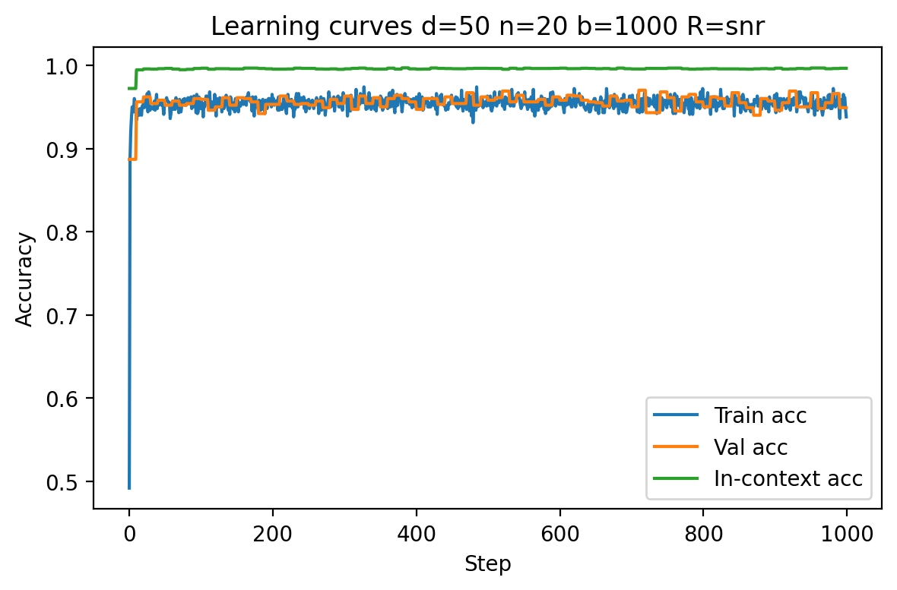
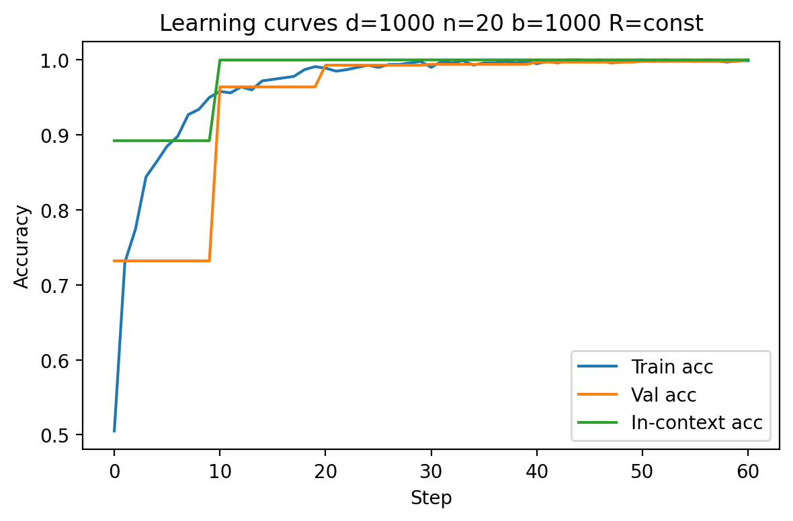
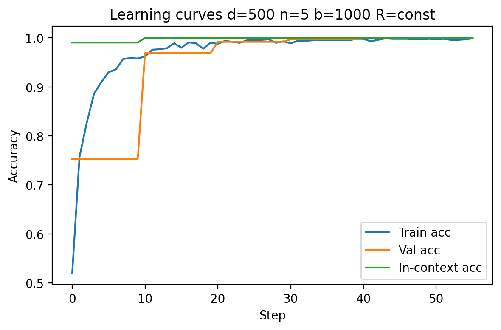
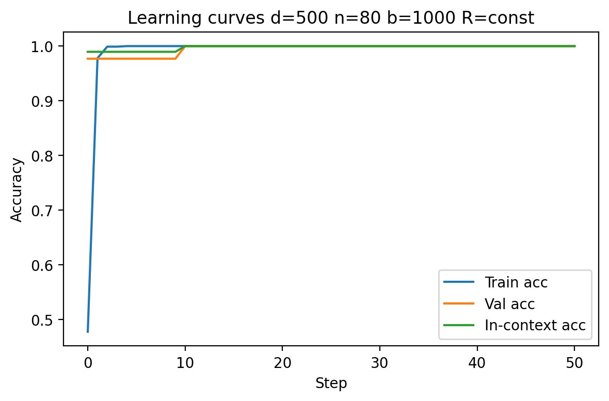
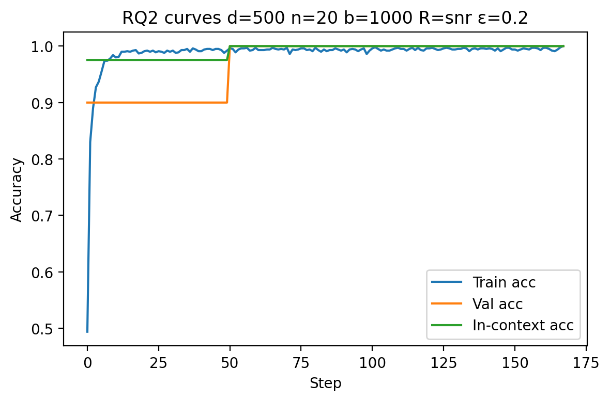
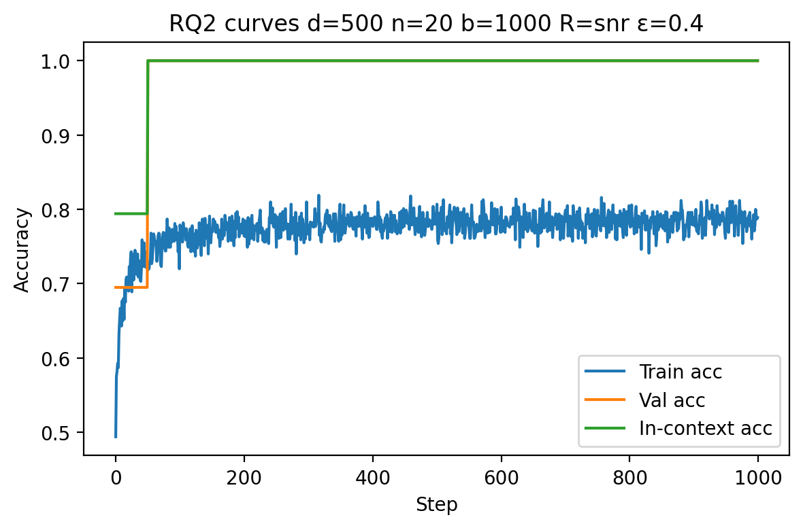
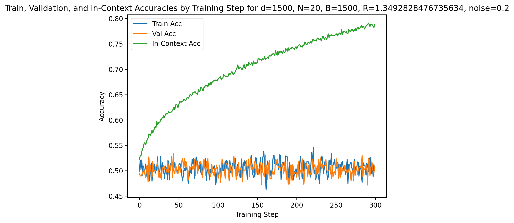
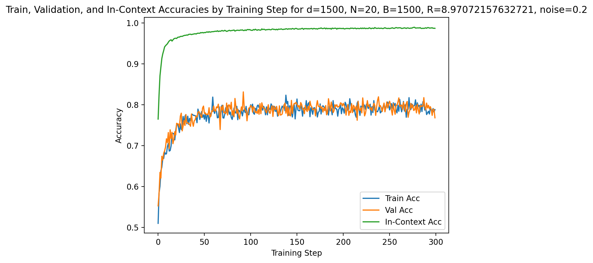
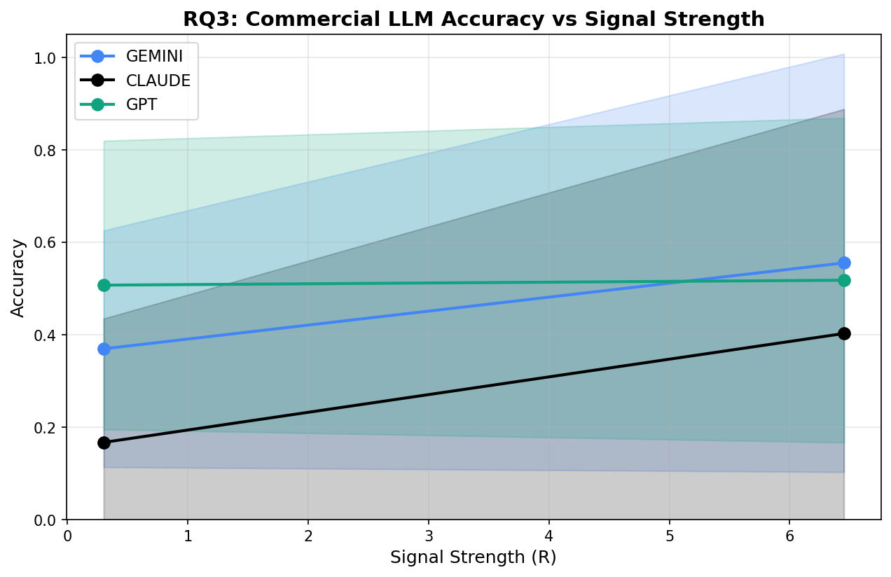
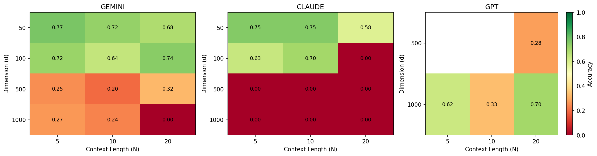

A systematic empirical study of when and why transformers can learn new tasks from examples alone—without any parameter updates—and the surprising conditions under which they generalize even from noisy data.
Rushil Chandrupatla · Leo Bangayan · Sebastian Leng
Mentor: Arya Mazumdar · DSC 180B Capstone, UC San Diego · 2026
Motivation
In-context learning (ICL) is the ability of transformer models to solve new tasks using only a handful of example input–output pairs provided in the prompt, with no parameter updates. This is how modern LLMs like GPT-4 and Claude can answer novel questions after seeing just a few demonstrations.
Understanding ICL matters because training large models is extremely expensive—GPT-3 training took roughly 3–4 continuous months. If models can adapt to new tasks purely through context, we can bypass costly retraining cycles. Yet the mechanisms driving ICL remain poorly understood: when does it work, when does it fail, and what makes the difference?
We conducted a comprehensive empirical investigation to answer these questions across three research axes: scaling laws, benign overfitting, and behavior of full transformer architectures.
Problem Setup
We study binary classification tasks generated from a Gaussian mixture model. Each task is an independent classification problem with its own direction vector, so the model must infer the task from context rather than memorize a fixed rule.
R controls the separation between classes (signal strength). Each task consists of N labeled context examples plus one query point whose label must be predicted.
| Parameter | Symbol | Description | Range Tested |
|---|---|---|---|
| Feature dimension | d | Number of features per data point | 50 – 1000 |
| Context examples | N | Labeled examples shown in-context | 5 – 80 |
| Training tasks | B | Number of tasks per training batch | 50 – 2000 |
| Signal strength | R | Class separation (signal-to-noise) | 1.35 – 9.5 |
| Label noise | ε | Probability of flipped context labels | 0 – 0.4 |
What we did: Systematic empirical sweeps over (d, N, B, R, ε) on synthetic Gaussian mixture tasks using a linear in-context classifier, plus evaluation of commercial LLMs (GPT-4o-mini, Claude, Gemini) on the same task format.
What we did not do: We did not derive new theoretical bounds or train full-scale transformer architectures from scratch. Our linear classifier isolates the geometric mechanism of ICL; full transformers were evaluated as pre-trained black boxes.
Approach
We organized our investigation around three complementary questions, each probing a different aspect of in-context learning. Expand each section below for methodological details.
How does in-context test accuracy scale with feature dimension (d), context size (N), and number of training tasks (B)?
Under what conditions does the model memorize noisy context labels yet still generalize correctly on clean test data?
Do commercial LLMs (GPT, Claude, Gemini) exhibit the same ICL behaviors predicted by linear attention theory?
We use a linear in-context classifier with a single learnable matrix W ∈ Rd×d. The model computes the label-weighted empirical mean of context examples, then predicts via the inner product μ̂TW xquery. This formulation mirrors the theoretical parameterization studied by Frei & Vardi (2024) while remaining tractable for large-scale sweeps.
Training: SGD with learning rate η = 0.01, zero initialization, up to 1000 steps, evaluated every 10 steps across 3 independent seeds. Loss is logistic and computed only on the query—context predictions are used exclusively for evaluation.
Experiments: We swept d ∈ {50, 100, 200, 500, 1000}, N ∈ {5, 10, 20, 40, 80}, B ∈ {50, 100, 250, 500, 1000, 2000}, under both constant R = 6.45 and SNR-scaled R = 0.3√d. Interaction grids over (d, N) and (B, N) captured cross-variable effects.
We inject label noise by independently flipping each context label with probability ε ∈ {0, 0.05, 0.1, 0.2, 0.3, 0.4}. In one set of experiments, noise is applied only to context labels (query labels remain clean); in another, noise is applied uniformly to both context and query labels.
Regime classification:
Low in-context accuracy,
low test accuracy
High in-context accuracy,
low test accuracy
High noisy in-context accuracy,
high test accuracy
We visualized regimes using phase diagrams over (d, ε), (R, ε), and (N, ε), sweeping across dimensionality, signal strength, and context size interactions.
We evaluated Google Gemini 2.0 Flash, Anthropic Claude, and OpenAI GPT-4o-mini on the same Gaussian mixture classification tasks. Since these models expect text, we serialized each feature vector as comma-separated floating-point numbers (4 decimal places) and constructed few-shot prompts with N labeled examples followed by an unlabeled query.
We also probed the open-weights TinyLlama-1.1B model on synthetic linear regression tasks, comparing its MSE against one-step gradient descent and preconditioned GD++ baselines.
Key Results
Below are the headline findings from each research question. Full training curves, phase diagrams, and additional figures are available in the full report and poster.










Honest Assessment
All experiments use Gaussian mixture tasks. While this gives precise control, real-world ICL operates on natural language and heterogeneous data distributions. Our findings characterize the geometric mechanism but may not transfer directly to production settings.
Our primary model is a linear in-context classifier (single W matrix). This deliberately isolates the geometric mechanism but cannot capture nonlinear attention effects present in full transformers.
RQ3 results are noisier due to uncontrollable factors: API-level randomness, prompt sensitivity, and the models' training on vastly different data. We cannot rule out that performance on serialized numerical data reflects prompt engineering rather than true ICL.
We trained for at most 1000 steps per configuration. Longer training could alter conclusions about convergence behavior, particularly in high-dimensional, low-signal regimes where accuracy was still improving at termination.
Our accuracy metrics are averaged over 3 independent seeds, so differences under ±2% should be considered noise. When we report that a configuration "reaches 1.0," this means the mean across seeds is ≥0.99. For benign overfitting results, the meaningful signal is the gap between in-context accuracy (on noisy labels) and validation accuracy (on clean data)—a large gap with both values high confirms benign overfitting.
Future work could extend this analysis to multi-class settings, non-Gaussian distributions, and mid-scale transformer architectures (e.g., fine-tuned GPT-2) where training dynamics can be observed directly. Investigating the transition between benign and classical overfitting with finer ε resolution would also help map the phase boundary more precisely.
Project Artifacts
All project materials are publicly available.
34-page PDF with all methods, figures, and discussion
Visual summary of all three research questions
Source code, training scripts, and reproducibility artifacts
Test ICL with GPT, Claude, and Gemini in your browser
pip install -r requirements.txt,
then run scripts in src/icl_reproduction/ (e.g.,
python example_comprehensive_pipeline.py).
The commercial LLM tests require API keys set in a
.env file—see the repository README for details.
References
Our linear in-context classifier formulation follows the theoretical framework of [1]. The function-class perspective on ICL capabilities draws from [2]. Commercial LLM APIs (OpenAI, Anthropic, Google) were accessed via their respective Python SDKs.
Team
RQ1 & RQ2: model design, training pipeline, results analysis, report writing
RQ2: benign overfitting experiments, noise injection methods, code
RQ3: commercial LLM evaluation framework, interactive demo, code
Faculty Mentor